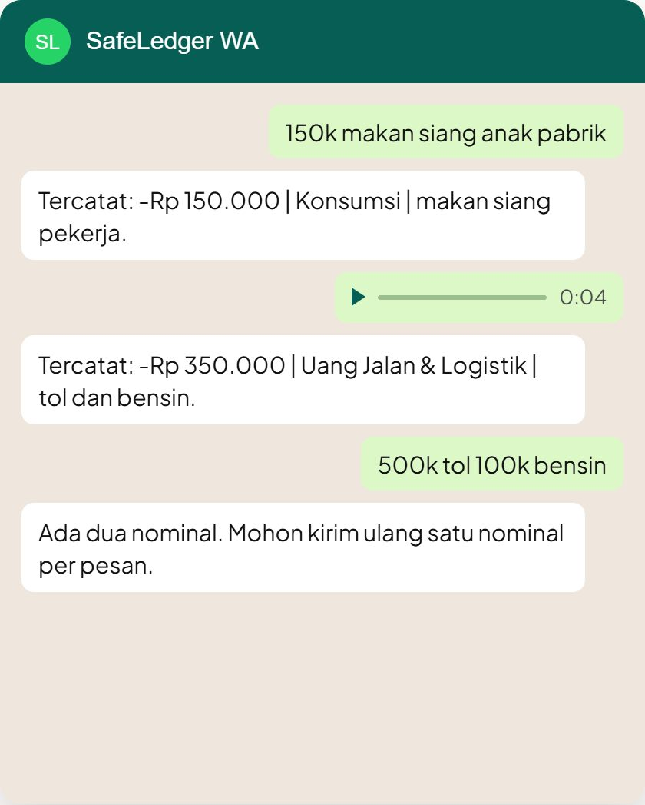
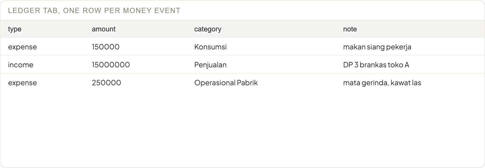

Case study
Bookkeeping for a workshop owner who won't open a spreadsheet.
A WhatsApp plus n8n bookkeeping bot for a safe-manufacturing workshop: staff send a message, code parses the amount, an LLM only classifies the category, and every entry is echoed back for confirmation.
The problem
He couldn't explain why 15 safes sold but the bank balance barely moved
A safe workshop owner tracked driver allowances, worker lunches and hardware runs from memory and fading receipts. At month end he could not say where the money went, and he won't open a spreadsheet.
Any solution had to meet him where he already works: WhatsApp, in his own language, with no new app and no form to fill in.
The solution
Log a money event by sending a WhatsApp message
Text, voice note or receipt photo
Staff send the entry the way they already talk. Nothing new to learn.
Code parses the amount
Indonesian amounts like 500k or 15jt are parsed by code. LLMs garble numbers, so the amount never comes from the model.
An LLM only classifies
The model picks the category and nothing else, which keeps the part that can go wrong small.
Every entry is echoed back
The sender confirms each record, e.g. “Tercatat: -Rp 150.000 | Konsumsi | makan siang pekerja.”
What I built
Four n8n workflows and a Google Sheet ledger
I wrote the PRD and built the workflows in n8n. Intake saves the raw message before any heavy step runs, so a failure never loses data.
- Intake
- →
- Process Message
- →
- Google Sheet ledger
WORKFLOW
Intake
Receives the WhatsApp message and stores it raw first.
WORKFLOW
Process Message
Parses the amount, classifies the category, writes the ledger row and replies.
WORKFLOW
Daily Summary, 20:00
Sends the day's totals each evening.
WORKFLOW
Error Handler
Catches failures so nothing is silently lost.


Status
Built and simulation-tested; not yet live
Four workflows are built and passed a simulated test. The live run on the owner's real WhatsApp number is the next step, so there is no usage data yet.